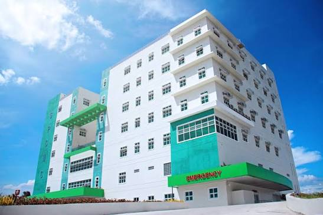
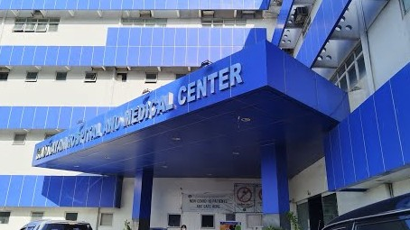
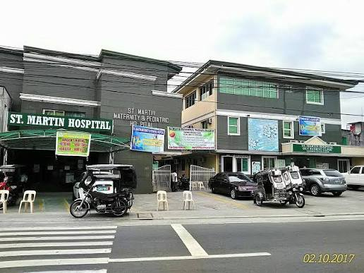

Cavite District 1San Pedro Calungsod Medical Center
⌖ Kalayaan Rd, Magdalo (Putol), Kawit, 4104 Cavite
⌕ (046) 458 1176
BLOOD NEEDED: AB+ | B−
Explore accredited blood donation banks, emergency trauma facilities,
and
current supply needs across Cavite District 1.

Cavite District 1⌖ Kalayaan Rd, Magdalo (Putol), Kawit, 4104 Cavite
⌕ (046) 458 1176

Cavite District 1⌖ 175 Covelandia Road, Barangay Balsahan, Bisita, Binakayan, Kawit, Cavite, 4104
⌕ (046) 516-0500 / 0917-110-261

Cavite District 1⌖ Marseilla, Salcedo 2, Noveleta, 4105 Cavite
⌕ (046) 458 1176